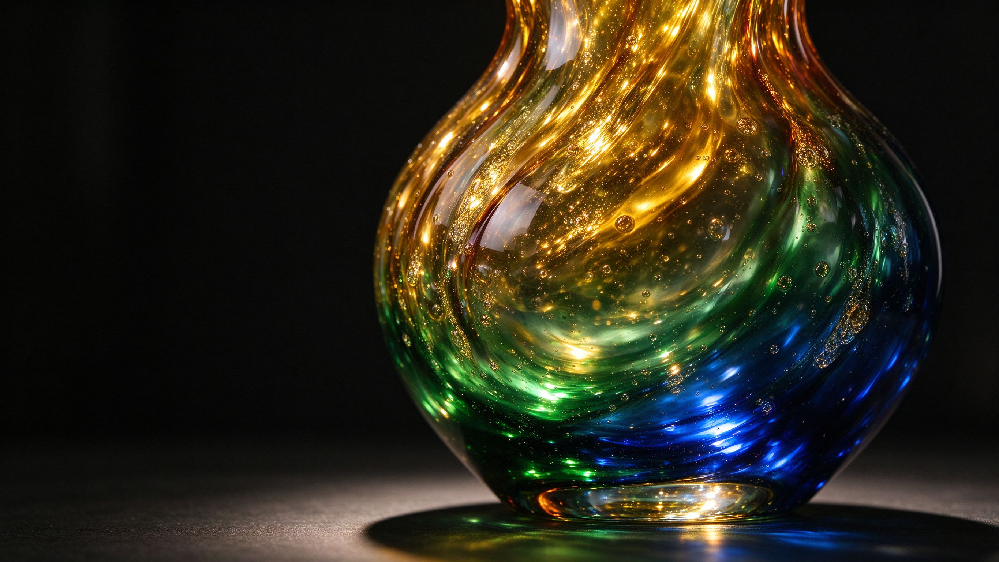
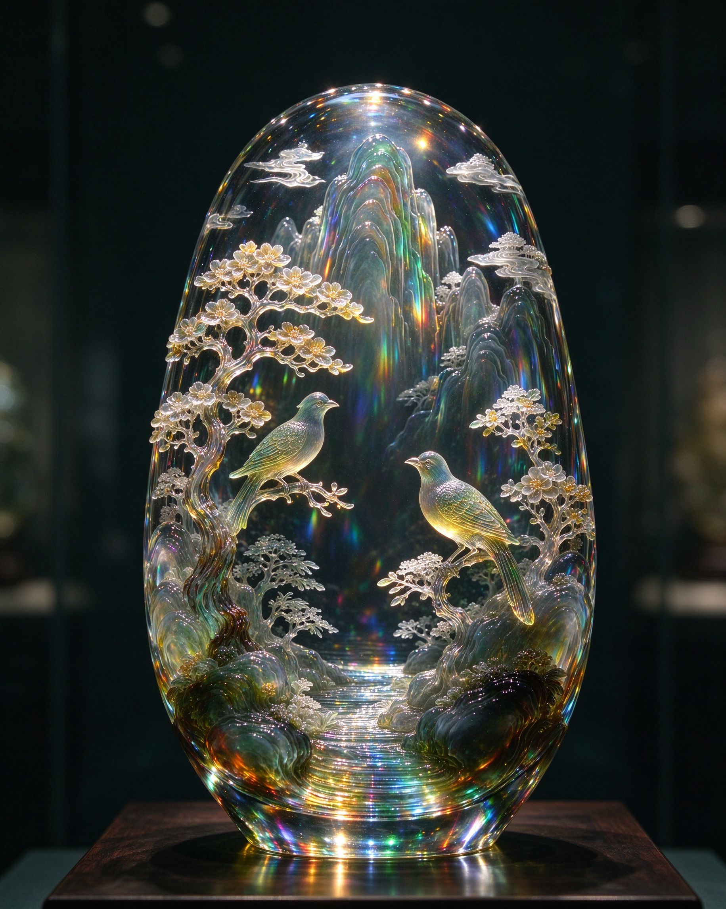
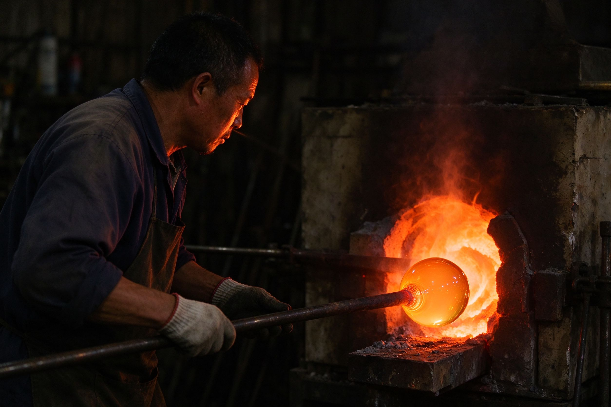

一千五百年炉火不熄，山东淄博博山琉璃以其"料器之精、天下无匹"的盛名， 将矿石与火焰淬炼为通透如冰、绚烂如虹的艺术品。

从西周鸟形琉璃珠到今日博山琉璃艺术馆，一颗火种在鲁中大地绵延不绝。
山东境内出土的西周琉璃珠，证明齐鲁大地早在两千年前已掌握原始玻璃烧制技艺。
西域料器工艺沿丝绸之路传入，与本地炼丹术融合，"博山炉"名闻天下。
明洪武年间，博山颜神镇设琉璃作坊，产品进贡宫廷，"料器"自此成行业专称。
康熙造办处玻璃厂特聘博山工匠，琉璃鼻烟壶、朝珠成为皇家珍品，行销海外。
2008年"淄博琉璃烧制技艺"入选国家级非物质文化遗产名录，老技艺走进美术馆与世界舞台。
一件琉璃作品，须经配料、熔化、吹制、雕刻、退火数十道工序，无一不考校工匠的呼吸与火候。
取熔融料珠于灯焰间，以气为笔、以火为墨，徒手吹出瓶、盂、鸟兽，器型随心而生。
在通透料胎上反向内雕山水花鸟，刀工入料三分，光一照则画在器中浮起。
金、银、铜、铁入炉，幻化出鸡油黄、翡翠绿、霁蓝、玫瑰紫等三百余种独特色料。
多色料在高温下自然交融、旋绕、沉淀，入窑一色，出窑万彩，无一器相同。

透明琉璃胎体内，以微型刻刀反向雕出山峦、古木与栖鸟。光线自器后透入，花鸟仿佛悬浮于虚空之中，随观者视角流转。
这是博山琉璃独有的"内画"与"内雕"技艺，与鼻烟壶内画一脉相承，却将尺度放大至案头陈设。
国家级非遗代表技艺 光随人动
一千三百度的坩埚中，矿石化为通红的浆液。工匠以长铁棍挑料，口吹气匀，凭借数十年经验判断料性的软硬与火候的进退。
一呼一吸之间，器型初成；再经退火窑七日缓冷，方能避免炸裂，凝定成器。
手工吹制 七日退火"一寸琉璃火，千年鲁地春。"
愿这束光，继续照亮年轻人的案头与远方。